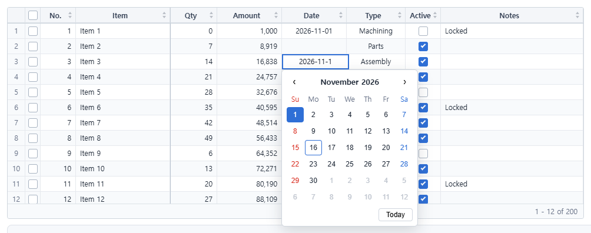
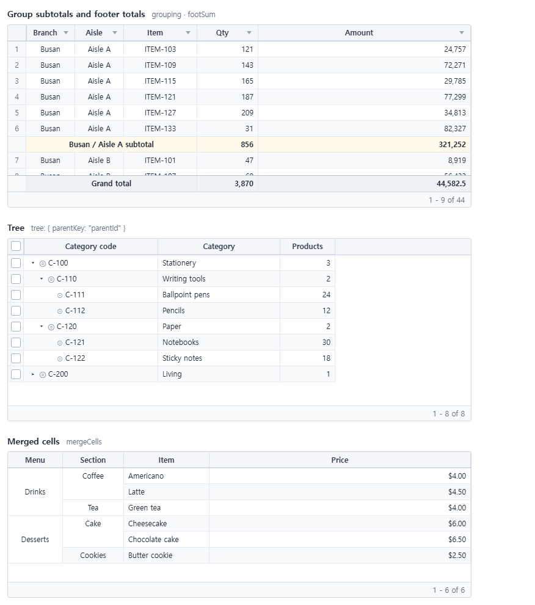

Weekly orders주간 주문·출고 현황
A full working screen: edit, paste from Excel, filter, undo, and export to xlsx. Switch between 6, 300, and 50,000 rows.
실제 업무 화면처럼 편집, 엑셀 붙여넣기, 필터, 실행 취소, xlsx 내보내기를 해 볼 수 있습니다. 행 수를 6·300·50,000으로 바꿀 수 있습니다.

Cell editors셀 편집기
Six editors and the full keyboard model. Select a cell and type; the first keystroke is never lost.
편집기 6종과 키보드 조작. 셀을 고르고 바로 치면 첫 글자부터 들어갑니다.

Totals, tree, and merged cells합계·트리·셀 병합
Group subtotals with a footer, a parent-key tree, and vertically merged cells that keep their label visible while scrolling.
그룹 소계와 합계 행, 부모 키로 만든 트리, 스크롤해도 글자가 보이는 셀 병합.

Server-side paging서버 페이징·정렬
Page buttons and sorting handed off to a (simulated) server through pagechange and sortchange.
페이지 이동과 정렬을 pagechange·sortchange로 (가짜) 서버에 맡깁니다.

50,000 rows × 30 columns50,000행 × 30열
Virtual scrolling in both directions. Creating the grid and loading the data takes a few dozen milliseconds.
가로·세로 가상 스크롤. 그리드를 만들고 데이터를 넣는 데 수십 ms면 됩니다.